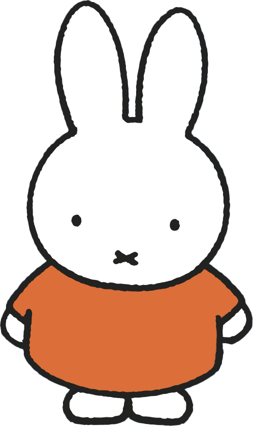

Photo Challenge 📸

« Miffy Rabbit Hunt » in Utrecht
Objective
During the city excursion, you must take selfies with a Miffy rabbit (statue, drawing, sign, traffic light, shop, etc.) together with your Dutch exchange student or other French students.
Pendant l’excursion dans la ville, vous devez prendre des selfies avec un lapin Miffy (statue, dessin, panneau, feu de circulation, boutique, etc.) avec votre correspondant néerlandais ou d’autres élèves français.
Rules of the Game
1️⃣ Students can participate alone or in small groups, but every photo must be a selfie.
2️⃣ The photo must show: at least one French student, a Dutch student (if possible), and a different Miffy rabbit (statue, drawing, object in the city...).
3️⃣ Each selfie must be sent to the class WhatsApp group during the excursion.
4️⃣ Only one selfie counts per different Miffy rabbit. → If two photos show the same rabbit, only one will be counted.
5️⃣ Selfies must be taken in Utrecht during the outing.
6️⃣ At the end of the excursion, the student (or group) who found the most different Miffy rabbits will win a small reward.
⚠️ Reminder: stay careful near roads and bicycles, respect pedestrians and places.
1️⃣ Les élèves peuvent participer seuls ou en petit groupe, mais chaque photo doit être un selfie.
2️⃣ Sur la photo doivent apparaître : au moins un élève français, un correspondant néerlandais (si possible), et un lapin Miffy différent (statue, dessin, objet dans la ville…).
3️⃣ Chaque selfie doit être envoyé sur le groupe WhatsApp de la classe pendant l’excursion.
4️⃣ Un seul selfie compte par lapin Miffy différent. → Si deux photos montrent le même lapin, une seule sera comptée.
5️⃣ Les selfies doivent être pris dans Utrecht pendant la sortie.
6️⃣ À la fin de l’excursion, l’élève (ou le groupe) qui aura trouvé le plus de lapins Miffy différents gagnera une petite récompense.
⚠️ Rappel : restez prudents près des routes et des vélos, respectez les passants et les lieux.
🐰 Who is Miffy?
Miffy (called Nijntje in Dutch) is a little white rabbit created in 1955 by Dutch illustrator Dick Bruna, who was originally from Utrecht.
She appears in very simple children's books, with minimalist drawings and bright colors. The stories tell the daily life of a curious little rabbit exploring the world.
The books were a huge success: over 80 million copies have been sold in more than 50 languages.
In Utrecht, the artist's hometown, Miffy has become a true local mascot: you can find statues, a museum, and even traffic lights bearing her image.
© Mercis bv. Illustrated by Dick Bruna - www.miffy.com
Miffy (appelée Nijntje en néerlandais) est une petite lapine blanche créée en 1955 par l’illustrateur néerlandais Dick Bruna, originaire d’Utrecht.
Elle apparaît dans des albums pour enfants très simples, avec des dessins minimalistes et des couleurs vives. Les histoires racontent la vie quotidienne d’une petite lapine curieuse qui découvre le monde.
Les livres ont connu un énorme succès : plus de 80 millions d’exemplaires ont été vendus dans plus de 50 langues.
À Utrecht, la ville de l’artiste, Miffy est devenue une véritable mascotte locale : on peut trouver des statues, un musée, et même des feux de circulation à son image.